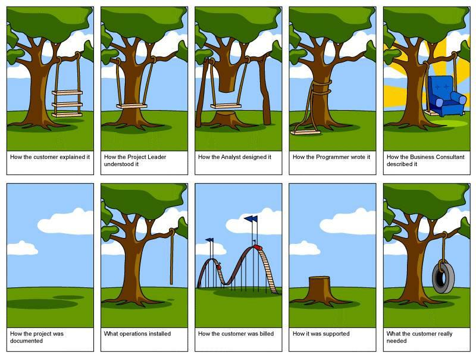

3.1.11 Software Development Life Cycle
1 What is the development life cycle?
Learn It
- The Software Development Life Cycle is comprised of two parts.
- A description of the phases of development
- The order in which the phases are carried out.
- There are a number of different models of software development, and you are required to learn them, compare them and discuss the advantages and disadvantages.
Learn It
- The general model of software development can be split into 5 distinct phases.
- Specification Requirements
- Design
- Implementation
- Testing
- Evolution
Learn It
- Specification Requirements

- The Specification requirements are an essential step in the development cycle.
- At this stage, all parties should be involved (Designers, Users and Programmers).
- At the end of this stage in the cycle, everyone should be aware of
- What functions the software will perform.
- What the User Experience (UX) will be like.
- What data the software will produce, access and store.
- How the data will be processed.
- By the end of this phase, a specification document will be drawn up, that can be referred to throughout the rest of the development.
- Software Design
- The design stage is usually carried out by software architects.
- This is often accomplished using flowcharts to detail, the flow of data through the software.
- At this stage, mock-ups of the User Interface (UI) are often created.
- Implementation
- At this stage the code is written.
- The programmer(s) will accomplish this using the design that was provided by the architect.
- Testing
- During this stage the software is tested against the Specification.
- Unit tests are used to test individual elements of the software.
- Software tests are used to test the software as a whole.
- Evolution
- At this stage, software is upgraded. This can happen for a number of reasons.
- Flaws (bugs) in the original software are discovered.
- Security updates are carried out due to previously unknown threats.
- Customer requirements change.
- Hardware changes
Research It
- There are many different models of Software Development.
- One is the
Waterfall Model.
- Read this Wikipedia article on the Waterfall Model.
Try It
- Draw a diagram of the Waterfall model of software development.
- Compose a bulleted list of the advantages of the Waterfall Model.
- Compose a bulleted list of the disadvantages of the Waterfall Model.
Try It
- Draw a diagram of the Incremental model of software development.
- Compose a bulleted list of the advantages of the Incremental Model.
- Compose a bulleted list of the disadvantages of the Incremental Model.
Research It
- Another model you need to understand is the
Spiral Model.
- Read this article on the Spiral Model.
Try It
- Draw a diagram of the Spiral model of software development.
- Compose a bulleted list of the advantages of the Spiral Model.
- Compose a bulleted list of the disadvantages of the Spiral Model.
Research It
- The final model you need to understand is the
V-shaped Model.
- Read this article on the V-shaped Model.
Try It
- Draw a diagram of the V-shaped model of software development.
- Compose a bulleted list of the advantages of the V-shaped Model.
- Compose a bulleted list of the disadvantages of the V-shaped Model.